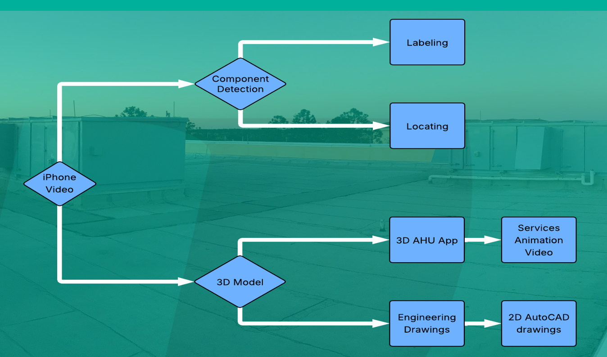

Mechanical Engineering & Computer Science
I’m Ivan Vashchenko, a Mechanical Engineering and Computer Science double major building real-world engineering systems where software, automation, and physical constraints collide. At WTI Pure Air, I’ve spent the last two years turning field data into production-ready deliverables—automation tools, 3D reconstruction pipelines, and ML-assisted workflows that support estimating, engineering design, and field teams. On campus, I lead with the same execution mindset as Founder/President of ACMC and President of CSO: run high-performing teams, ship meaningful work fast, and keep standards high when the schedule gets heavy.
Selected work—demos and write-ups available.
I developed an end-to-end AHU digitalization ecosystem that turns on-site iPhone video into final deliverables for Sales and Engineering. The pipeline converts field capture into scaled 3D point clouds and meshes via photogrammetry, then produces interactive 3D visualization, section-based CAD outputs with automated DXF cleanup/orthogonalization, and ML-driven component recognition (classification + YOLO detection).

I designed and built an autonomous bearing sorting and packaging prototype. The system uses a Raspberry Pi vision pipeline with ML classification to identify components in real time, then synchronizes that output with mechanical actuation to route parts through a gravity-fed sorting path and into the correct packaging stream.
QuickScope is an internal automation tool I built to speed up project estimating and reduce repetitive manual work across Engineering and Sales. It pulls together the key project inputs, automates the Excel/reporting steps people used to do by hand, and keeps estimates consistent by propagating the same metadata across outputs and systems.